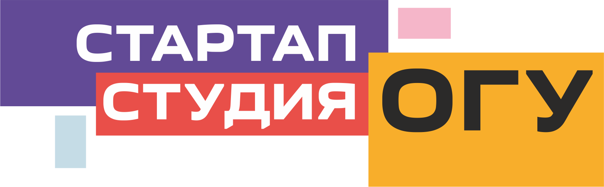
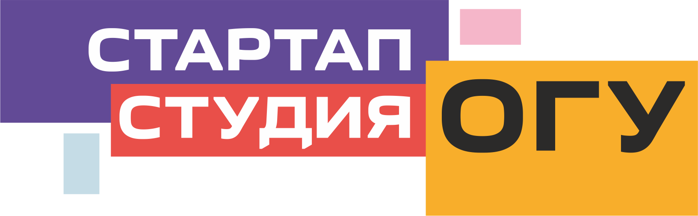

О проекте
Проект направлен на разработку и тестирование прототипа программно-аппаратного комплекса для определения упитанности молочного скота.
Оценка упитанности — важная часть современного хозяйства. Упитанность оценивается в баллах от 1 до 5, где 1 — тощая, 5 — ожирение. Оптимальные показатели меняются в зависимости от периода жизни коровы.
Наш комплекс позволяет автоматизировать этот процесс, снижая зависимость от человеческого фактора и квалификации персонала.


 
